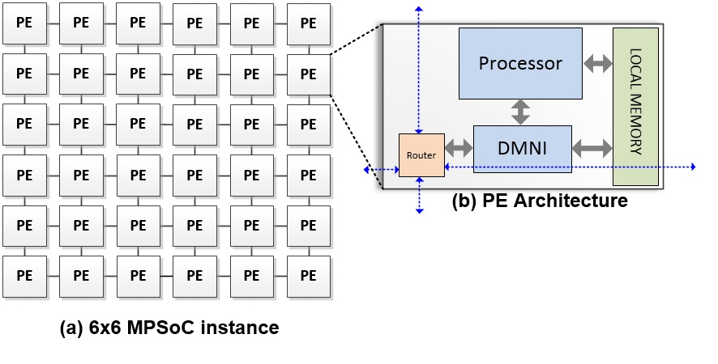
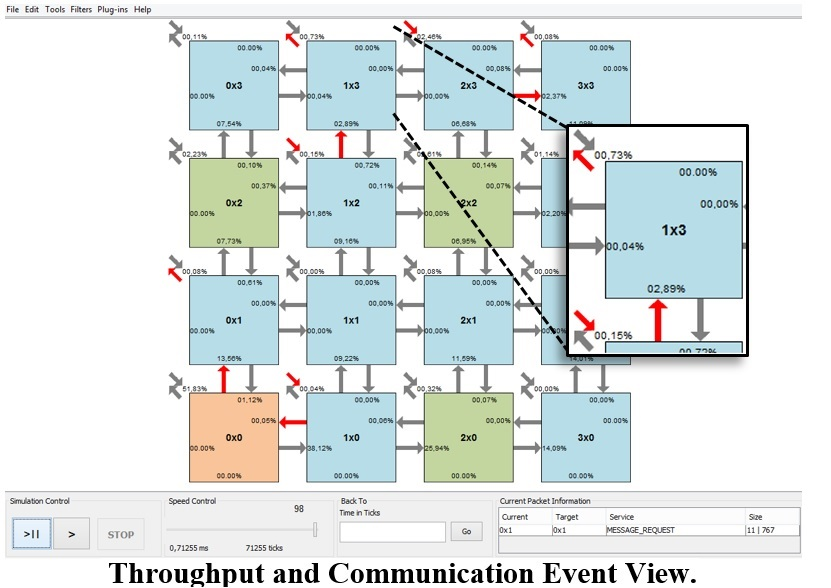
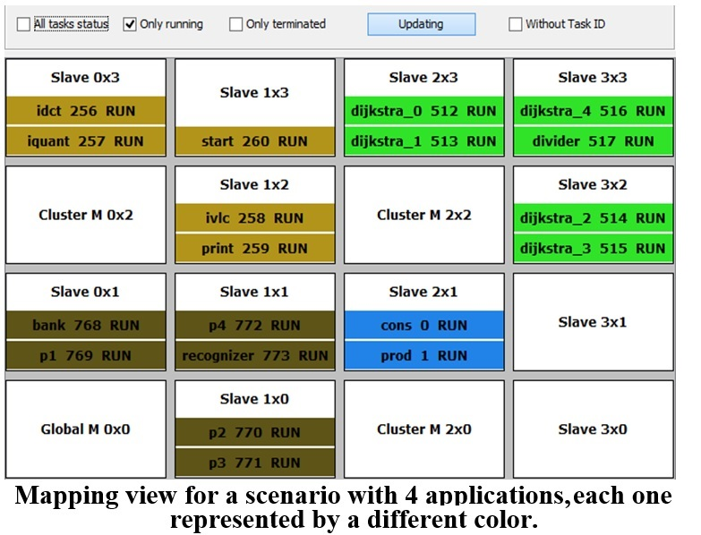
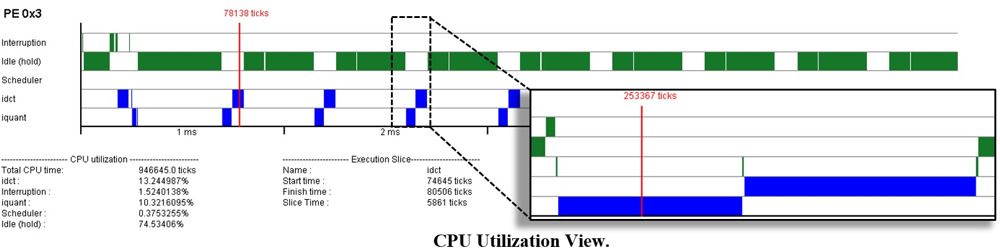

What is HeMPS? HeMPS stands to Hermes Multiprocessor Systems. HeMPS is a state-of- the-art NoC-based MPSoC,
with PEs interconnected through a 2D-mesh topology. Each processing element contains an RISC processor, a direct
memory network interface (DMNI), and a dual-port private memory. Applications are modeled as a set o communicating
tasks, using message-passing as the communication method.

Each processor runs a small operating system, microkernel, responsible for real-time task scheduling
and communication between tasks. The memory is organized in equally sized pages, favouring task
mapping and task migration. When a given task is required to be mapped, it may use any available page
in the PE set. In the same way, if a task is required to be migrated from one PE to another, the
transmission of the page contents and the task context is sufficient to ensure the correct task migration.
It is possible to simulate large systems, with hundreds of processors. To ensure scalability, HeMPS
adopts a distributed management dividing the MPSoC into regions, named clusters, which are defined at
design time. At execution time, if a given application does not fit in a cluster, the cluster may ask
resources to adjacent clusters.
A clock-cycle accurate SystemC and synthesizable VHDL describes the hardware part of the HeMPS. The software
is mostly written in C language, except some procedures of the microkernel, as context saving/restoring and
interruption handling, which are written in assembly code.
A set of tools enables to debug system features and applications. Examples of system features include mapping,
application scheduling, the number of executed instructions per processor, NoC traffic, among other features
Example of application debug include the messages generated by each task.



Debugging demonstration video:
You can download the entire source code, test programs, programming environment completely for free on the GitHub site